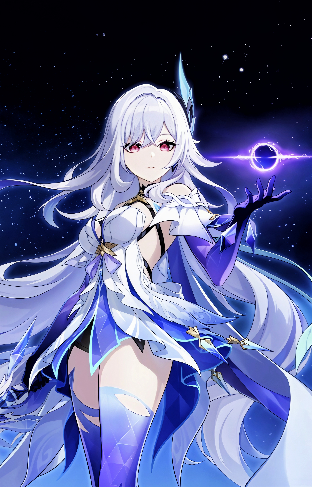

Skirk was born on an unnamed planet in the sea of stars. Its people had evolved a unique ability to adapt to extreme environments and even make passive contact with the Abyss without harm.
As a child, she would sneak away from school to gaze at the sky, dreaming of the stars. She was innocent, adventurous, and full of wonder.
One day, space merchants arrived and were welcomed by her people. But after investigating the planet, they deemed the natives a "potential threat" due to their Abyssal compatibility.
The merchants called an army. Skirk's village was set ablaze. Her parents were among the only ones who fought back — and died for it. Almost everyone perished. Skirk survived alone.
She was discovered by Surtalogi, known as "The Foul" — one of Khaenri'ah's Five Sinners. He restored her broken, bloody arm, shattered by the raid.
But there was no celebration. He immediately forced her to train every single day until her limbs broke again — then healed her, only to repeat the cycle. A weapon being forged in pain.
Skirk traveled across the universe with Surtalogi, witnessing him bury gods, civilizations, and star-forged weapons. No one had ever forced him to use his full power.
She grew stronger witnessing his devastation. A revelation came: strength was not about winning. It was about forcing the strongest to take you seriously.
Surtalogi eventually opened a pathway to Teyvat for Skirk. Though she did not qualify as a Descender, she entered through the Abyssal rift.
In the Abyss, time flows differently — three months there equal only three days in Teyvat. She became a solitary wanderer of the Abyssal deep.
When a fourteen-year-old boy named Tartaglia fell into the Abyss, Skirk took him as her disciple. She taught him nearly all his abilities.
She rarely spoke to him — "I have nothing to say to the weak." But she kept her distance intentionally, knowing that too much influence would hinder his growth.
When the All-Devouring Narwhal threatened Fontaine, Skirk emerged from an Abyssal rift with an unconscious Childe. She had been privately training the beast — what she called a "short private training session."
She converted the Narwhal into a small orb with contemptuous ease and noted both Neuvillette's and the Traveler's strength in subduing it without relying on raw power.
Unlike regular Vision-wielders, Skirk uses something called the "Seven-Shifting Serpent" to channel Cryo. Its nature remains a mystery — theorized to be a device for wielding one of Teyvat's elements without a Vision.
Skirk has traveled Teyvat like a shadow for a very long time, avoiding lasting bonds. She acknowledges that living is a blessing — but believes that death turns bonds into "curses."
She no longer wishes to return to the surface world permanently. The darkness and the void are where she belongs now.
In her Story Quest, Skirk's past is finally revealed to the Traveler. She revisits the memories of her destroyed home planet and confronts who she has become.
Despite her coldness, she demonstrates a quiet, grudging care — not weakness, but the calcified remains of a child who once loved the stars.
❄️ Seven-Phase Flash Mode:
Skirk's Elemental Skill Havoc: Warp activates Seven-Phase Flash mode, infusing her sword with Cryo and massively boosting her combat abilities.
🌀 Havoc: Sever Stacks:
Each Void Rift she absorbs grants a Havoc: Sever stack (max 3). These stacks enable coordinated follow-up attacks during Normal Attacks and can reduce incoming damage by 80%.
💥 Havoc: Ruin (Burst):
Her Elemental Burst consumes all Havoc: Sever stacks to launch devastating coordinated attacks, each dealing 750% ATK as Cryo DMG per stack.
🔷 Reason Beyond Reason (Passive):
Each Void Rift absorbed summons a crystal blade that strikes nearby enemies for 500% ATK as Cryo DMG (with C1 constellation).
❄️ Pure on-field Cryo DPS — build Crit DMG as the ascension stat
🗡️ Sword user with infusion — does not need external Cryo application
💠 Seven-Shifting Serpent replaces traditional Vision usage
⚡ Extremely high damage ceiling especially with Havoc: Sever active
🌌 Best paired with Cryo/Freeze supports or shatter teams